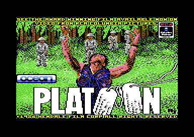
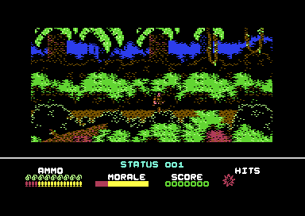
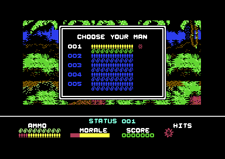

<meta charset="utf-8">
<meta name="viewport" content="width=device-width, initial-scale=1">
<title>{{title}}</title>
<link rel="preconnect" href="https://fonts.googleapis.com">
<link rel="stylesheet" href="https://fonts.googleapis.com/css2?family=Lato:wght@400;700;900&family=IBM+Plex+Mono:wght@400;500&display=swap">
<style>
:root{
  --bg:#23262d; --paper:#e9e7e1; --surface:#ffffff; --surface-2:#f1efea; --line:#d5d3cc; --line-soft:#e0ded8;
  --ink:#2f3136; --ink-soft:#55585f; --ink-mute:#80838a;
  --link:#1f5fa8; --link-hover:#154480; --accent:#1f5fa8;
  --amber:#c25a00; --cyan:#1f5fa8; --coral:#d04a3a; --green:#2a8a4a; --violet:#4a5bd6; --hl:#fff0c2;
  --chip:#2f3136; --chip-ink:#ffffff;
  --c64blue:#40318d; --c64grey:#686868;
  --fd:'Lato',system-ui,sans-serif; --fb:'Lato',system-ui,sans-serif; --fm:'IBM Plex Mono',ui-monospace,Menlo,monospace;
  --col:1080px; --gx:68px; --fs:17px; --lh:1.6; --hw:900; --h1:46px; --h2:26px; --sy:48px; --pp:26px; --r:10px;
  --plate-shadow:0 1px 2px rgba(0,0,0,.05),0 4px 14px rgba(0,0,0,.05);
}
*{box-sizing:border-box}
html{background:var(--bg);min-height:100%}
body{background:var(--paper);color:var(--ink);font-family:var(--fb);font-size:var(--fs);line-height:var(--lh);max-width:var(--col);margin:0 auto;min-height:100vh;padding:0 0 4rem}
h1,h2,h3{font-weight:var(--hw);letter-spacing:-.01em;text-wrap:balance;color:var(--ink);margin:0}
.wrap{padding:0 var(--gx)}
.hero{padding:48px var(--gx) 8px;text-align:left}
.eyebrow{font-family:var(--fm);font-size:12px;letter-spacing:.08em;text-transform:uppercase;color:var(--ink-mute);margin:0 0 10px}
.hero h1{font-size:var(--h1);line-height:1.15;letter-spacing:-.02em;margin:0 0 14px}
.hero .sub{margin:0 0 .6em;color:var(--ink-soft)}
section{padding:var(--sy) 0 24px}
section:last-of-type{border-bottom:none}
.fig{font-family:var(--fm);font-size:12px;letter-spacing:.08em;text-transform:uppercase;color:var(--ink-mute);margin:0 0 10px}
h2.t{font-size:var(--h2);margin-bottom:12px}
.lede{color:var(--ink-soft);margin:0 0 30px}
.plate{background:var(--surface);border:1px solid var(--line);border-radius:var(--r);padding:var(--pp);box-shadow:var(--plate-shadow)}
.cap{font-size:14px;color:var(--ink-mute);margin-top:14px;line-height:1.55}
.cap b{color:var(--ink);font-weight:700}
code{font-family:var(--fm);font-size:.82em;background:var(--chip);color:var(--chip-ink);border-radius:4px;padding:2px 6px;white-space:nowrap}

</style>
<!-- tabs -->
<header class="hero"><p class="eyebrow">Commodore 64 · 1987 · Ocean</p><h1>Platoon</h1><p class="sub">Ocean's game of the Oliver Stone film is four programs on one disk, each a whole game of its own: a scrolling jungle, a first-person tunnel maze, a night in a dugout, and a jungle maze that ends at Sergeant Barnes's bunker.</p></header>
<main class="wrap" data-part="load1">

<section><p class="fig">01 · The game</p><h2 class="t">Five men in Vietnam</h2>
<div class="plate"><p class="cap">The loading picture, shown while the first load comes in.</p></div>
<p>The player leads a platoon of five soldiers, one man at a time, through the film's story in four parts. In the <a href="#jungle">jungle</a> they find explosives and blow up a bridge, then search a <a href="#jungle">village</a> for a torch and a map that lead to the <a href="#tunnels">tunnels</a>. Under the ground they look for flares and a compass, then hold a <a href="#dugout">dugout</a> through the night. Last comes a <a href="#maze">jungle maze</a> against the clock, with Sergeant Barnes waiting in his bunker.</p>
<p>A man who takes four wounds is out, and the <a href="#men">CHOOSE YOUR MAN</a> panel brings on the next. When all five are gone the game is over.</p>
<div class="plate"><p class="cap">The first screen of the jungle, with the status panel below it.</p></div>
</section>

<section data-part=""><p class="fig">02 · Structure</p><h2 class="t">Four programs on one disk</h2>
<p>Each section is a separate program of about 56 KB that fills the machine from <code>$0400</code> to the top of memory. A one-kilobyte loader file on the disk (LAY1, LAY2 or LAY3) brings in the next. Every program carries its own copy of the <a href="music.html">music driver</a> at <code>$E000</code>, its own raster interrupts and its own title and end screens, so nothing is kept from one section to the next but the disk itself.</p>
<div class="plate"><table><tr><th>Part</th><th>File</th><th>Section</th><th>Leads to</th></tr>
<tr><td><a href="source-load1.html">load1</a></td><td>OVL1, side 1</td><td>The jungle and the village</td><td>LAY2, after the disk is turned over</td></tr>
<tr><td><a href="source-load2.html">load2</a></td><td>O1, side 2</td><td>The jungle and the village again</td><td>LAY2</td></tr>
<tr><td><a href="source-load3.html">load3</a></td><td>O2, side 2</td><td>The tunnels and the dugout</td><td>LAY3</td></tr>
<tr><td><a href="source-load4.html">load4</a></td><td>O3, side 2</td><td>The jungle maze and Barnes's bunker</td><td>LAY1, which loads O1</td></tr></table>
<p class="cap">Side 2 holds its own copy of the first section, so a game that ends in the last section starts again without turning the disk back.</p></div>
</section>

<section id="jungle"><p class="fig">03 · Section one</p><h2 class="t">The jungle, built from blocks</h2>
<p>The jungle and the village are one map at <a href="source-load1.html#A000"><code>$A000</code></a>: 20 rows of 90 block numbers. A block is 8 characters across and 6 down, stored at <code>$8000</code> + 48 × its number, so one screen is five blocks wide and three high. As the soldier walks, the screen scrolls a pixel at a time and <code>$B70B</code> or <code>$B7BA</code> decodes one new column of characters from the map. The <a href="levels.html">Maps tab</a> draws the whole map.</p>
<p>Climbing a ladder moves the map position three rows up or down (<code>$2A09</code>), and a ladder down from a hut leads to the entrance of the tunnels. The bridge is two blocks, <code>$8C</code> and <code>$8D</code>; setting the explosives swaps them for the broken blocks <code>$95</code> and <code>$96</code>. Walking on to the place where the bridge stood drops the soldier into the river (<code>$3D38</code>), and if the bridge is still standing when the patrol arrives (<code>$3B25</code>) the game is over.</p>
<p>Enemies walk in from either edge on a timer whose gap shortens by one each time, down to five passes (<code>$1EC7</code>). What each one does next comes from 22 short scripts of actions at <code>$259E</code>, picked by a random number: walk, jump, fire, or crouch and shoot back when the soldier fires. In the village the figures are villagers, and shooting one gives the message YOU SHOULD NOT KILL INNOCENT VILLAGERS.</p>
<p>Searching a hut (<code>$CC8D</code>) looks the soldier's place up in 19 ranges of the map and shows what is there: a sack of flour, a pot of rice, the torch, the map, or a booby trap. With both the torch and the map, the trapdoor asks DO YOU WISH TO GO DOWN, and fire loads the next section.</p>
</section>

<section id="men"><p class="fig">04 · Lives</p><h2 class="t">Five men, four wounds each</h2>
<div class="plate"><p class="cap">The CHOOSE YOUR MAN panel, opened when a man is lost.</p></div>
<p>A hit costs three points of morale, four once morale is below 43, and adds a wound mark to the panel (<code>$BD56</code>). When a man is lost, <code>$BFB8</code> saves his wounds, grenades and magazines into his row of the table at <code>$F69F</code> and opens the CHOOSE YOUR MAN panel, where the cursor moves over the five slots and fire picks a man (<code>$C157</code>). A man with four wounds cannot be chosen, and when all five have four the game is over.</p>
<p>Ammunition is counted in magazines, eight shots each, drawn as half and whole icons on the panel (<code>$BCCB</code>). A dead enemy may leave supplies on the ground: 300 points, two more magazines, a wound taken back and four points of morale (<code>$3A88</code>).</p>
</section>

<section id="tunnels" data-part="load3"><p class="fig">05 · Section two</p><h2 class="t">The tunnels in first person</h2>
<p>The tunnels are seen from the soldier's eyes, with a small map in the corner. The map is a grid of squares, tunnel or water or rock; forward and back step one square, and left and right turn (<a href="source-load3.html#09F1"><code>$09F1</code></a>). Each step scans up to four squares ahead for walls, water and side passages (<code>$10A0</code>), and <code>$1260</code> draws the view from two picture halves of 10 by 18 characters chosen by what the scan found.</p>
<p>Ten squares are rooms (<code>$15DC</code>). Each has boxes on its picture, and firing at a box with the crosshair takes what it holds: flares, the compass, Viet Cong ammunition or medical supplies (<code>$19D1</code>). While the soldier walks, the counters at <code>$0725</code> start Viet Cong attacks from ahead or from a side passage. Shooting the attacker scores 300 points; if his knife reaches the end of its frames, the man is killed.</p>
</section>

<section id="dugout" data-part="load3"><p class="fig">06 · Section two, continued</p><h2 class="t">A night in the dugout</h2>
<p>With the flares and the compass, the soldier reaches the dugout (<a href="source-load3.html#1A21"><code>$1A21</code></a>) and has to hold it until dawn. Enemies rise and duck in the dark, and a flare (<code>$1D7B</code>) climbs and burns through nine stages that light the screen and show the enemies (<code>$1E50</code>). At dawn the game shows WELL DONE! SECTION COMPLETED, scores 5,000 points and loads the last section.</p>
</section>

<section id="maze" data-part="load4"><p class="fig">07 · Section three</p><h2 class="t">A maze of 120 jungle rooms</h2>
<p>The last section is a maze of rooms on a grid ten wide and twelve high (<a href="source-load4.html#3590"><code>$3590</code></a>). Each room is drawn from one of a few maps of 30 by 25 characters, then trees, huts and the bunker are added from its own list of shapes (<code>$3634</code>). Walking off an open edge moves to the next room, and the panel's compass arrows show which edges are open (<code>$3905</code>). The <a href="levels.html#maze">Maps tab</a> draws every room.</p>
<p>The section runs against a clock that starts at two minutes (<code>$1B87</code>). Mines and tripwires wait in the rooms, a sniper fires from the trees (<code>$22E0</code>), and in the bunker Barnes takes five hits before he falls (<code>$16A9</code>). Running out of time or men ends on YOUR PLATOON HAS BEEN DESTROYED; beating Barnes ends on the honourable discharge, worth 30,000 points (<code>$C06A</code>).</p>
<p>While a man is wounded, a heartbeat plays as a sample through the volume register, faster for each wound (<code>$F000</code>).</p>
</section>

<section><p class="fig">08 · The cheat</p><h2 class="t">Z, A, C, H, and 1</h2>
<p>Every frame of the first section, the main loop at <code>$07B5</code> tests whether Z, A, C, H and 1 are held together. With all five down it writes <code>rts</code> over the first byte of <code>$2BC8</code>, the test of whether an enemy has caught the soldier or an enemy bullet has hit him, so neither can kill him; N puts the routine back. The letters are the first name of the programmer, Zach Townsend. The <a href="discoveries.html">Discoveries tab</a> says what the cheat leaves out.</p>
</section>

<section data-part=""><p class="fig">09 · Reception</p><h2 class="t">Reception</h2>
<p>Zzap!64 gave the Commodore 64 version 94%, praising it as a faithful film licence.<sup class="fn"><a href="about.html#src-1" title="Wikipedia, Platoon (1987 video game)">1</a></sup></p>
</section>

</main>
<footer style="margin:16px 0 0;padding:22px var(--gx) 0;border-top:1px solid #e0ded8;font-family:'IBM Plex Mono',ui-monospace,Menlo,monospace;font-size:12px;color:#80838a"><a href="https://github.com/gamesexplained/gamesexplained" aria-label="GitHub" style="display:inline-flex;align-items:center;justify-content:center;width:26px;height:26px;margin-left:8px;border:1px solid #e0ded8;border-radius:7px;background:#ffffff;color:#80838a;vertical-align:middle"><svg width="15" height="15" viewBox="0 0 24 24" fill="currentColor" aria-hidden="true"><path d="M12 .297c-6.63 0-12 5.373-12 12 0 5.303 3.438 9.8 8.205 11.385.6.113.82-.258.82-.577 0-.285-.01-1.04-.015-2.04-3.338.724-4.042-1.61-4.042-1.61C4.422 18.07 3.633 17.7 3.633 17.7c-1.087-.744.084-.729.084-.729 1.205.084 1.838 1.236 1.838 1.236 1.07 1.835 2.809 1.305 3.495.998.108-.776.417-1.305.76-1.605-2.665-.3-5.466-1.332-5.466-5.93 0-1.31.465-2.38 1.235-3.22-.135-.303-.54-1.523.105-3.176 0 0 1.005-.322 3.3 1.23.96-.267 1.98-.399 3-.405 1.02.006 2.04.138 3 .405 2.28-1.552 3.285-1.23 3.285-1.23.645 1.653.24 2.873.12 3.176.765.84 1.23 1.91 1.23 3.22 0 4.61-2.805 5.625-5.475 5.92.42.36.81 1.096.81 2.22 0 1.606-.015 2.896-.015 3.286 0 .315.21.69.825.57C20.565 22.092 24 17.592 24 12.297c0-6.627-5.373-12-12-12"/></svg></a><a href="https://discord.gg/3V9GWyRDWV" aria-label="Discord" style="display:inline-flex;align-items:center;justify-content:center;width:26px;height:26px;margin-left:8px;border:1px solid #e0ded8;border-radius:7px;background:#ffffff;color:#80838a;vertical-align:middle"><svg width="15" height="15" viewBox="0 0 24 24" fill="currentColor" aria-hidden="true"><path d="M20.317 4.3698a19.7913 19.7913 0 00-4.8851-1.5152.0741.0741 0 00-.0785.0371c-.211.3753-.4447.8648-.6083 1.2495-1.8447-.2762-3.68-.2762-5.4868 0-.1636-.3933-.4058-.8742-.6177-1.2495a.077.077 0 00-.0785-.037 19.7363 19.7363 0 00-4.8852 1.515.0699.0699 0 00-.0321.0277C.5334 9.0458-.319 13.5799.0992 18.0578a.0824.0824 0 00.0312.0561c2.0528 1.5076 4.0413 2.4228 5.9929 3.0294a.0777.0777 0 00.0842-.0276c.4616-.6304.8731-1.2952 1.226-1.9942a.076.076 0 00-.0416-.1057c-.6528-.2476-1.2743-.5495-1.8722-.8923a.077.077 0 01-.0076-.1277c.1258-.0943.2517-.1923.3718-.2914a.0743.0743 0 01.0776-.0105c3.9278 1.7933 8.18 1.7933 12.0614 0a.0739.0739 0 01.0785.0095c.1202.099.246.1981.3728.2924a.077.077 0 01-.0066.1276 12.2986 12.2986 0 01-1.873.8914.0766.0766 0 00-.0407.1067c.3604.698.7719 1.3628 1.225 1.9932a.076.076 0 00.0842.0286c1.961-.6067 3.9495-1.5219 6.0023-3.0294a.077.077 0 00.0313-.0552c.5004-5.177-.8382-9.6739-3.5485-13.6604a.061.061 0 00-.0312-.0286zM8.02 15.3312c-1.1825 0-2.1569-1.0857-2.1569-2.419 0-1.3332.9555-2.4189 2.157-2.4189 1.2108 0 2.1757 1.0952 2.1568 2.419 0 1.3332-.9555 2.4189-2.1569 2.4189zm7.9748 0c-1.1825 0-2.1569-1.0857-2.1569-2.419 0-1.3332.9554-2.4189 2.1569-2.4189 1.2108 0 2.1757 1.0952 2.1568 2.419 0 1.3332-.946 2.4189-2.1568 2.4189Z"/></svg></a><br>© Games Explained contributors. Write-ups, facts and symbol maps are available under <a href="https://creativecommons.org/licenses/by-sa/4.0/" style="color:#1f5fa8;text-decoration:none">CC BY-SA 4.0</a>; code under <a href="https://opensource.org/licenses/MIT" style="color:#1f5fa8;text-decoration:none">MIT</a></footer>
